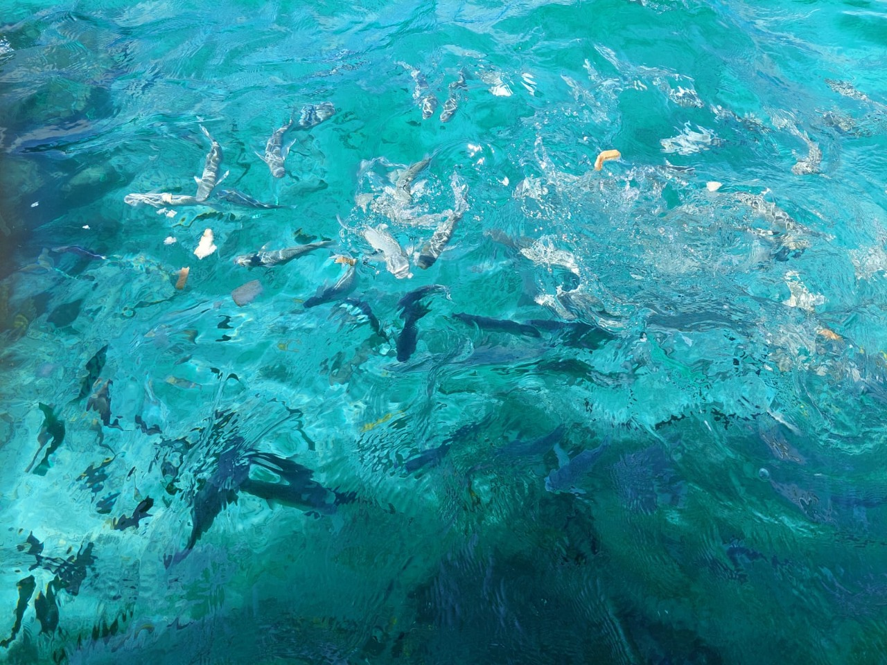
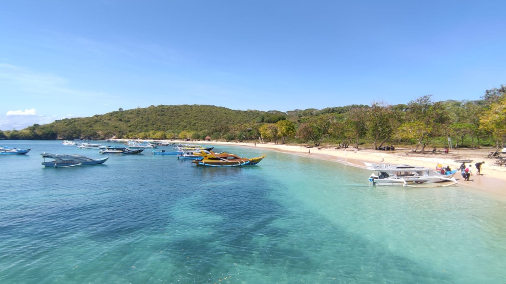

Pantai Pink Lombok adalah salah satu destinasi wisata yang harus dikunjungi. Pantai Pink terletak di Desa Tanjung Luar, Lombok Timur, NTB. Untuk bisa sampai di Pantai Pink kita dapat menggunakan jalan darat(Mataram-Pantai Pink) selama 4-5 jam atau jalan laut(Mataram-Tanjung Luar-Pantai Pink) selama 1 setengah jam, Pantai Pink memiliki 3 pantai ada pantai pink 1, pink 2 dan pink 3. Selain pemandangan yang bagus dan pasir yang lembut, di Pantai Pink kita juga bisa melakukan aktifitas lain seperti diving dan Snorkling


